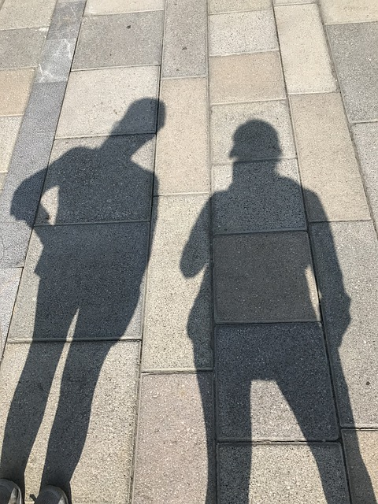

Box-Shadow
Contenedor que usa la propiedad de text-shadow para crear una sombra.
Parrafo que usa la propiedad de text-shadow para crear una sombra.
El atributo text-shadow crea una sombra del texto, de este modo hay que tener cuidado al dar valor a la desplazamiento vertical y horizontal ya que puede dificultar la comprensión del texto.
Contenedor que usa la propiedad de text-shadow para crear una sombra.
Contenedor que usa la propiedad de text-shadow para crear una sombra.
Contenedor que usa la propiedad de text-shadow para crear una sombra.
El atributo box-shadow es muy utilizado para crear tarjetas (card). Este tipo de diseño es muy común desde la aparición del material design, una guía completa para el diseño visual que creo Google para que los diseños web y móviles (al menos de Android) fuesen similares.